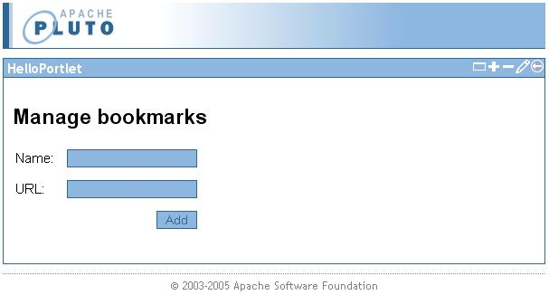
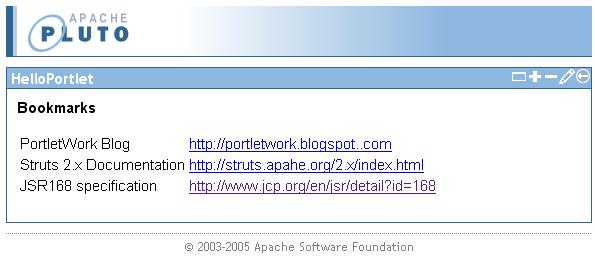
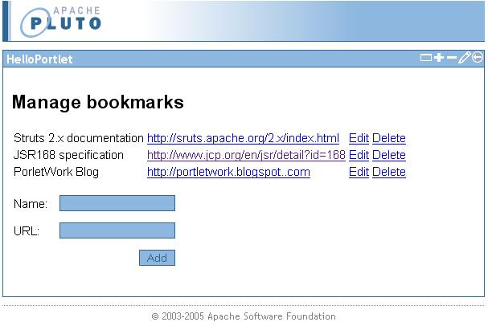

Struts 2 Portlet Tutorial - Creating a simple Bookmark Portlet
| Work in progress Using version 2.1.1-SNAPSHOT of the portlet plugin |
| Note that this tutorial assumes that you're familiar with basic Struts 2 web application programming. If you have not used Struts 2 before, please check out some of the other Struts 2 tutorials first. |
Preparations
In this tutorial we will use eclipse as our IDE. If you do not have Eclipse, you can download it from http://www.eclipse.org.
The project itself will be set up using Maven 2. Maven 2 is available from http://maven.apache.org.
If you have not used the maven-eclipse-plugin before, you need to set up the Eclipse workspace with a variable that points to the Maven 2 repository. To do this, type
mvn -Declipse.workspace=<path-to-eclipse-workspace> eclipse:add-maven-repo
Creating the project
We'll use Maven 2 with the Struts 2 Portlet Archetype to create a skeleton project for our portlet application. From the command line, issue the command:
mvn archetype:create -DarchetypeGroupId=org.apache.struts -DarchetypeArtifactId=struts2-archetype-portlet -DarchetypeVersion=2.1.1-SNAPSHOT -DartifactId=bookmark-portlet
-DgroupId=com.mycompany -DremoteRepositories=http://people.apache.org/repo/m2-snapshot-repository
This will set up the maven 2 structure for us and also set up the basic configuration needed to create a Struts 2 portlet. The archetype creates a sample HelloWorld portlet that shows off some of the basic principles of Struts 2 portlet programming. To test the set up, type
mvn jetty:run -P pluto-embedded
in a command prompt. Open a browser and point your browser to http://localhost:8080/bookmark-portlet/pluto/index.jsp and play around.
Looking at the basics
To see how the basic HelloWorld example works, let's look at some of the configuration files, starting with the JSR168 portlet descriptor
<?xml version="1.0" encoding="UTF-8"?> <portlet-app version="1.0" xmlns="http://java.sun.com/xml/ns/portlet/portlet-app_1_0.xsd" xmlns:xsi="http://www.w3.org/2001/XMLSchema-instance" xsi:schemaLocation="http://java.sun.com/xml/ns/portlet/portlet-app_1_0.xsd http://java.sun.com/xml/ns/portlet/portlet-app_1_0.xsd" id="bookmark-portlet"> <portlet id="HelloPortlet"> <description xml:lang="EN">Simple hello world portlet</description> <portlet-name>HelloPortlet</portlet-name> <display-name xml:lang="EN">bookmark-portlet</display-name> <portlet-class>org.apache.struts2.portlet.dispatcher.Jsr168Dispatcher</portlet-class> <!-- The namespace for the actions configured for view mode --> <init-param> <name>viewNamespace</name> <value>/view</value> </init-param> <!-- The default action to invoke in view mode. --> <init-param> <name>defaultViewAction</name> <value>index</value> </init-param> <!-- The namespace for the actions configured for edit mode --> <init-param> <name>editNamespace</name> <value>/edit</value> </init-param> <!-- The default action to invoke in edit mode. --> <init-param> <name>defaultEditAction</name> <value>index!input</value> </init-param> <expiration-cache>0</expiration-cache> <supports> <mime-type>text/html</mime-type> <portlet-mode>view</portlet-mode> <portlet-mode>edit</portlet-mode> </supports> <supported-locale>en</supported-locale> <portlet-info> <title>HelloPortlet</title> <short-title>HelloPortlet</short-title> <keywords>struts 2,portlet,hello,world</keywords> </portlet-info> </portlet> </portlet-app>
The important parts to notice are the portlet-class and init-param elements. The portlet-class element is always org.apache.struts2.portlet.dispatcher.Jsr168Dispatcher (or a subclass, if you have added some custom functionality). This is the portlet that acts as the dispatcher for the Struts 2 framework, and translates incoming user interaction to action requests that Struts 2 understands. The init-params viewNamespace, defaultViewAction, editNamespace and defaultEditAction set up some defaults for the dispatcher when the portlet encounters a portlet mode without a specific action. Here, we set up the view portlet mode to map to the /view action namespace, and the edit portlet mode to map to the /edit action namespace. We also specify that the default actions for the mentioned portlet modes are index and index!input respectively. We will recognize these namespaces in the next file:
<?xml version="1.0" encoding="UTF-8" ?> <!DOCTYPE struts PUBLIC "-//Apache Software Foundation//DTD Struts Configuration 2.0//EN" "http://struts.apache.org/dtds/struts-2.0.dtd"> <struts> <package name="default" extends="struts-portlet-default" namespace="/view"> <action name="index" class="com.mycompany.HelloAction"> <result>/WEB-INF/jsp/view/index.jsp</result> </action> </package> <package name="edit" extends="struts-portlet-default" namespace="/edit"> <action name="index" class="com.mycompany.UpdateNameAction"> <result type="redirectAction"> <param name="actionName">index</param> <param name="portletMode">view</param> </result> <result name="input">/WEB-INF/jsp/edit/index.jsp</result> </action> </package> </struts>
As we can see, the actions for the view portlet mode is in the default package, with /view as namespace, and the actions for the edit portlet mode is in the edit package, with /edit as namespace.
Import the project into Eclipse
Now let's import the project into Eclipse. First, type
mvn eclipse:eclipse -P pluto-embedded
Then start Eclipse (if you have not already done so), and import the project using "File -> Import -> General -> Existing Projects into Workspace". Browse to the folder where you created the project and press finish. Your portlet project should now be setup up with all dependencies in place.
Creating the Bookmark domain object
To represent the bookmarks, we'll create a simple domain object. We'll keep it really simple, so the Bookmark object will only have a name and a url property:
public class Bookmark { private String name; private String url; public Bookmark(String name, String url) { this.name = name; this.url = url; } public String getName() { return name; } public String getUrl() { return url; } }
Adding bookmarks
Adding bookmarks is an operation that logically belongs to the edit portlet mode. So we'll create a simple action for this purpose, and configure it in the edit configuration package. In normal Struts 2 fashion, we'll create an action object with the properties we need:
public class AddBookmarkAction extends DefaultActionSupport { private String name; private String url; public void setName(String name) { this.name = name; } public void setUrl(String url) { this.url = url; } @Override public String execute() throws Exception { return SUCCESS; } }
And in struts.xml, remove the existing configuration for the edit package and add an entry for the action:
<package name="edit" extends="struts-portlet-default" namespace="/edit"> <action name="index" class="com.mycompany.AddBookmarkAction"> <result name="input">/WEB-INF/jsp/edit/index.jsp</result> </action> </package>
Let's create the input form so we have something to display. The form is really simple, with a label and a text field for each of the properties in the Bookmark domain object:
<%@ taglib prefix="s" uri="/struts-tags" %> <h2>Manage bookmarks</h2> <s:form action="index"> <table> <s:textfield name="name" label="Name"/> <s:textfield name="url" label="URL"/> <s:submit value="Add"/> </table> </s:form>
The textfields maps to the property names we have defined in AddBookmarkAction. Before we continue, let's check that everything is configured correctly and check that our portlet can be run. In a command prompt, change into the directory where you have created the project and issue the command mvn jetty:run -P pluto-embedded. Then open http://localhost:8080/bookmark-portlet/pluto/index.jsp and click on the edit portlet window control. If everything is set up correctly, you should see a form like this:

If you try to submit data in the form, it will obviously not work since we have not implemented any logic to add bookmarks yet. That will be our next task. Since we'll need a PortletPreferences reference, we'll have the action implement the PortletPreferencesAware interface that will instruct Struts 2 to inject this into our action, without the need for us to look it up manually. When we have the reference to the PortletPreferences object, we'll implement logic to store the bookmark (or rather the bookmark's properties, since we can only store Strings in the preferences object):
public class AddBookmarkAction extends DefaultActionSupport implements PortletPreferencesAware { private String name; private String url; private PortletPreferences portletPreferences; public void setName(String name) { this.name = name; } public void setUrl(String url) { this.url = url; } public void setPortletPreferences(PortletPreferences portletPreferences) { this.portletPreferences = portletPreferences; } @Override public String execute() throws Exception { portletPreferences.setValue(name, url); portletPreferences.store(); return SUCCESS; } }
After the bookmark has been stored, we'll just redirect back to the input form:
<package name="edit" extends="struts-portlet-default" namespace="/edit"> <action name="index" class="com.mycompany.AddBookmarkAction"> <result type="redirectAction"> <param name="actionName">index!input</param> </result> <result name="input">/WEB-INF/jsp/edit/index.jsp</result> </action> </package>
We use a redirectAction result type to redirect back to the input form in proper PRG (Post - Redirect - Get) manner.
Now we can add some bookmarks. We don't get much feedback though, so let's proceed...
Listing the bookmarks
The bookmarks will be listed in the view portlet mode, so we'll create a ListBookmarksAction and configure it in the default package:
public class ListBookmarksAction extends DefaultActionSupport implements PortletPreferencesAware { private List<Bookmark> bookmarks = new ArrayList<Bookmark>(); private PortletPreferences portletPreferences; public List<Bookmark> getBookmarks() { return bookmarks; } public void setPortletPreferences(PortletPreferences portletPreferences) { this.portletPreferences = portletPreferences; } @Override public String execute() throws Exception { // For simplicity, we'll assume that only bookmarks are stored in the preferences. Map<String, String[]> preferencesMap = portletPreferences.getMap(); for(Map.Entry<String, String[]> entry : preferencesMap.entrySet()) { bookmarks.add(new Bookmark(entry.getKey(), entry.getValue()[0])); } return SUCCESS; } }
Again we use the PortletPreferencesAware to get the PortletPreferences injected in our action. Then we just get all the values from the preferences and add them as a Bookmark instance in an ArrayList.
Obviously, we'll need a jsp to view the list of bookmarks:
<%@ taglib prefix="s" uri="/struts-tags" %> <strong>Bookmarks</strong> <p> <table> <s:iterator value="%{bookmarks}" var="bookmark"> <tr> <td><s:property value="%{name}"/></td> <td><a href="<s:property value="%{url}"/>" target="_blank"><s:property value="%{url}"/></a></td> </tr> </s:iterator> </table> </p>
In the JSP, we just iterate over the list of Bookmarks and print the properties in the iterator loop.
In struts.xml, remove the default package, and add this instead:
<package name="view" extends="struts-portlet-default" namespace="/view"> <action name="index" class="com.mycompany.ListBookmarksAction"> <result>/WEB-INF/jsp/view/index.jsp</result> </action> </package>
When you're ready, go back to a command prompt and start the server again (mvn jetty:run -P pluto-embedded), open a browser and start adding some bookmarks. When you go back to view mode after adding a few, you'll see the bookmarks listed:

Preparing for bookmark management
It would be nice to be able to manage the list of bookmarks, so we'll add delete and edit functionality. All modifications will happen in the edit portlet mode. We'll start by displaying the list of bookmarks in the edit mode as well. The plan is to extend this list to add a delete and an edit link to modify the bookmark entries. We'll do it really simple and just copy the code from the index.jsp for view into the index.jsp for edit and add the links in a new table column:
<%@ taglib prefix="s" uri="/struts-tags" %> <h2>Manage bookmarks</h2> <p> <table> <s:iterator value="%{bookmarks}" var="bookmark"> <s:url action="editBookmark!input" id="editUrl"> <s:param name="oldName" value="%{name}"/> </s:url> <s:url action="deleteBookmark" portletUrlType="action" id="deleteUrl"> <s:param name="bookmarkName" value="%{name}"/> </s:url> <tr> <td><s:property value="%{name}"/></td> <td><a href="<s:property value="%{url}"/>" target="_blank"><s:property value="%{url}"/></a></td> <td><a href="<s:property value="%{editUrl}"/>">Edit</a></td> <td><a href="<s:property value="%{deleteUrl}"/>">Delete</a></td> </tr> </s:iterator> </table> </p> <s:form action="addBookmark"> <table> <s:textfield name="name" label="Name"/> <s:textfield name="url" label="URL"/> <s:submit value="Add"/> </table> </s:form>
For the delete url we need to specify that it is a portlet action url since portlet preferences cannot be changed in the render phase. We also need to change our configuration a bit since we'll use this page as index page for edit mode, and not only as the input form for the AddBookmarkAction:
<package name="edit" extends="struts-portlet-default" namespace="/edit"> <action name="index" class="com.mycompany.ListBookmarksAction"> <result>/WEB-INF/jsp/edit/index.jsp</result> </action> <action name="addBookmark" class="com.mycompany.AddBookmarkAction"> <result type="redirectAction"> <param name="actionName">index</param> </result> </action> </package>
Here we have added the ListBookmarksAction as the index action, which will display the bookmark list with the input form. When the form is submitted, it will invoke the addBookmark action, and upon success, control is redirected back to the index action. With this new structure, we'll also need to updated the portlet descriptor to use index instead of index!input as the default action for edit mode:
<!-- The default action to invoke in edit mode. -->
<init-param>
<name>defaultEditAction</name>
<value>index</value>
</init-param>
Now you can (re)start the server and see how it works. This is how it looks in edit mode after adding a few entries:

Deleting bookmarks
Let's create the action that handles deletion of bookmarks. It's pretty simple. As with our other actions, we need to get a reference to the PortletPreferences and simply remove the bookmark values from it:
public class DeleteBookmarkAction extends DefaultActionSupport implements PortletPreferencesAware{ private String bookmarkName; private PortletPreferences portletPreferences; public void setBookmarkName(String bookmarkName) { this.bookmarkName = bookmarkName; } public void setPortletPreferences(PortletPreferences portletPreferences) { this.portletPreferences = portletPreferences; } @Override public String execute() throws Exception { portletPreferences.reset(bookmarkName); portletPreferences.store(); return SUCCESS; } }
Pretty simple and straight forward. Next, add a configuration entry for the action in the edit package:
<action name="deleteBookmark" class="com.mycompany.DeleteBookmarkAction"> <result type="redirectAction"> <param name="actionName">index</param> </result> </action>
After a bookmark has been deleted, we redirect back to the index action. Now you should be able to click the Delete link to remove individual entries.
Editing bookmarks
The final step is to edit bookmark entries. When the user clicks the edit link, the portlet will display a new page with an input form and the bookmark values already filled in the text fields. We'll start by creating the jsp file:
<%@ taglib prefix="s" uri="/struts-tags" %> <h2>Edit bookmark</h2> <s:form action="editBookmark"> <input type="hidden" name="oldName" value="<s:property value="%{oldName}"/>"/> <table> <s:textfield name="name" label="Name" value="%{oldName}"/> <s:textfield name="url" label="URL"/> <s:submit value="Update"/> </table> </s:form>
The oldName hidden field keeps track of which bookmark is beeing edited, since the name is also our id to the entry beeing edited. The actual update of the bookmark will be a "delete and add a new entry":
public class EditBookmarkAction extends DefaultActionSupport implements PortletPreferencesAware, Preparable, ParameterAware { private String oldName; private String name; private String url; private PortletPreferences portletPreferences; private Map<String, String[]> parameters; public String getOldName() { return oldName; } public void setOldName(String oldName) { this.oldName = oldName; } public String getUrl() { return url; } public void setUrl(String url) { this.url = url; } public void setName(String name) { this.name = name; } public void setPortletPreferences(PortletPreferences portletPreferences) { this.portletPreferences = portletPreferences; } public void setParameters(Map<String, String[]> parameters) { this.parameters = parameters; } public void prepare() throws Exception { // Since the prepare interceptor is run before the parameter interceptor, // we have to get the parameter "manually". this.oldName = parameters.get("oldName")[0]; this.url = portletPreferences.getValue(oldName, null); } public String execute() throws Exception { // The modification is handled as remove/add portletPreferences.reset(oldName); portletPreferences.setValue(name, url); portletPreferences.store(); return SUCCESS; } }
There's a couple of new things here, but nothing unfamiliar if you have worked with Struts 2 before. We use the Preparable interface to pre-populate the vaules in the edit form, and we use the ParameterAware interface to get a reference to the request parameter map. Other than that, the execute method simply resets the old value for the bookmark and add it with the (possibly) new name.
The last thing we need to do is to add the configuration in the edit package for the new action:
<action name="editBookmark" class="com.mycompany.EditBookmarkAction"> <result type="redirectAction"> <param name="actionName">index</param> </result> <result name="input">/WEB-INF/jsp/edit/edit.jsp</result> </action>
Summary
Using Struts 2, we built a simple bookmark portlet utilizing the edit portlet mode for management operations. The tutorial should have given you a basic understanding of portlet development with Struts 2, and that it is not very different from using Struts 2 in a regular web application.
Notes
Instead of using the Maven 2 Jetty plugin to run the tutorial, you can check out the JettyPlutoLauncher which is included in the test sources. Just launch it as a regular Java class in your IDE. And to debug, just launch it in debug mode.
Links
S2PLUGINS:Source code for the tutorial
JSR168 Specification
Struts 2 Portlet Configuration options
Author's blog about portlet related development
Old tutorial for WebWork 2